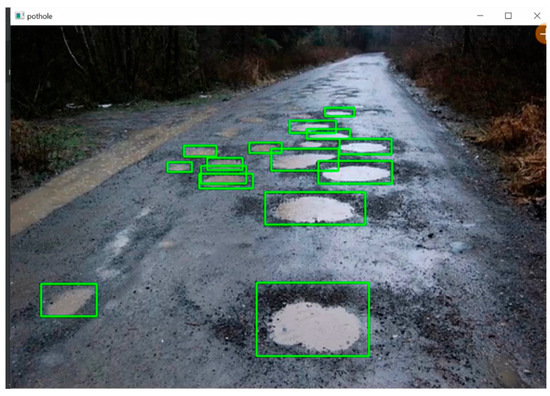

The Automated Road Damage Detection system leverages UAV-captured images and deep learning techniques to identify and categorize road damages efficiently. By utilizing convolutional neural networks (CNNs), the model processes high-resolution aerial images to detect various types of road damage, such as cracks, potholes, and surface wear. This approach offers a cost-effective and scalable solution for road maintenance and monitoring. Additionally, the system's integration with a user-friendly frontend interface ensures easy visualization and interpretation of detection results, facilitating prompt maintenance actions.
Introduction: Brief overview of road damage detection and its importance for road maintenance. Motivation for using UAVs for data collection and deep learning techniques for detection. Objectives of the project and expected outcomes. Literature Review: Overview of existing approaches for road damage detection (e.g., manual inspection, traditional image processing techniques). Summary of recent advancements in deep learning and UAV-based monitoring systems. Identification of research gaps and justification for the chosen approach. Methodology: Dataset Preparation: Collection of UAV-captured road images and preprocessing steps (e.g., resizing, augmentation). Model Architecture: Description of the deep learning model (e.g., CNN) used for feature extraction and classification. Training Process: Details about training, validation, loss functions, optimization techniques, and evaluation metrics. Integration: Connecting the trained model with the frontend interface for real-time predictions. Implementation 